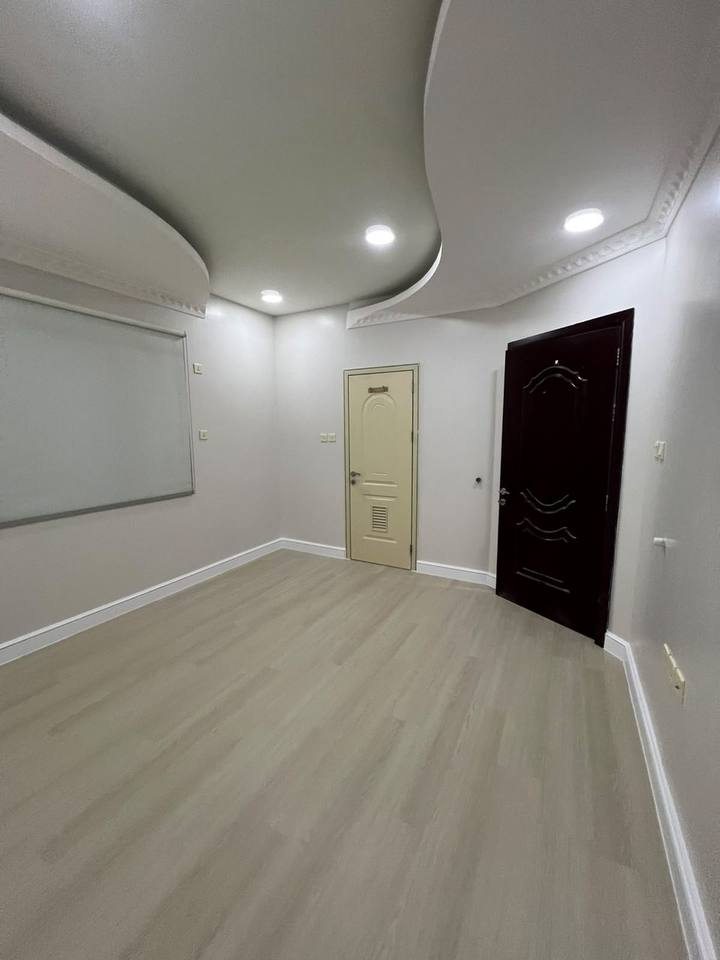

2026-11-08
How to choose your home's paint colours in Dammam and Khobar
A guide to choosing interior paint colours for Dammam and Khobar homes: coastal light, Jotun and Al Jazeera shades per r…
Read the article ←Six specialist guides written by the execution team itself — no copied content: colours, humidity, peeling, material comparisons and shades. Every article has its own page, so it reaches you straight from a Google search.

2026-11-08
A guide to choosing interior paint colours for Dammam and Khobar homes: coastal light, Jotun and Al Jazeera shades per r…
Read the article ←2026-11-10
Protecting your home from Eastern Province humidity and rain: north-wall condensation, roof insulation and salt treatmen…
Read the article ←2026-11-12
Why does paint peel in coastal Dammam and Khobar homes? Diagnosing peeling, blistering and cracking by the shape of the …
Read the article ←2026-11-13
A practical comparison of German 18mm chipboard and ribbed WPC wood substitute slats: durability, humidity resistance, l…
Read the article ←2026-11-14
When are UV marble substitute and WPC wood substitute a smart choice in Eastern Province homes, and when is natural marb…
Read the article ←2026-11-15
Car shades in Dammam and Khobar: Korean PVC at 1100gsm vs light fabrics, galvanised structures and engineered fixing — a…
Read the article ←Pick the service and city, add a few details — your request opens in WhatsApp ready to send. Final price is confirmed after the free inspection.